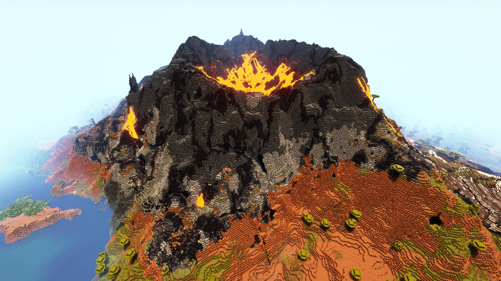
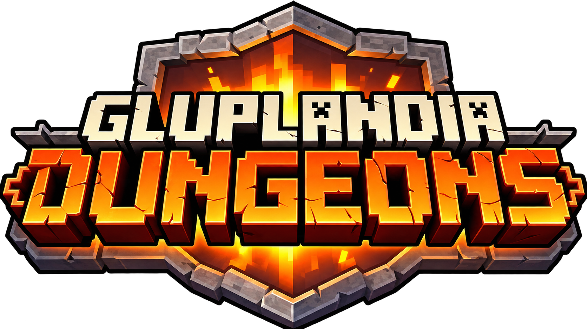
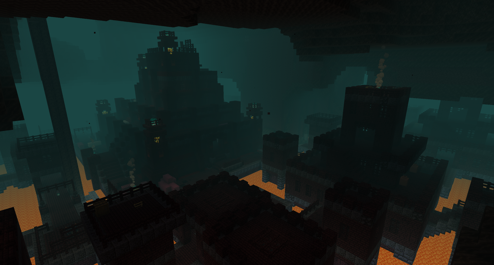
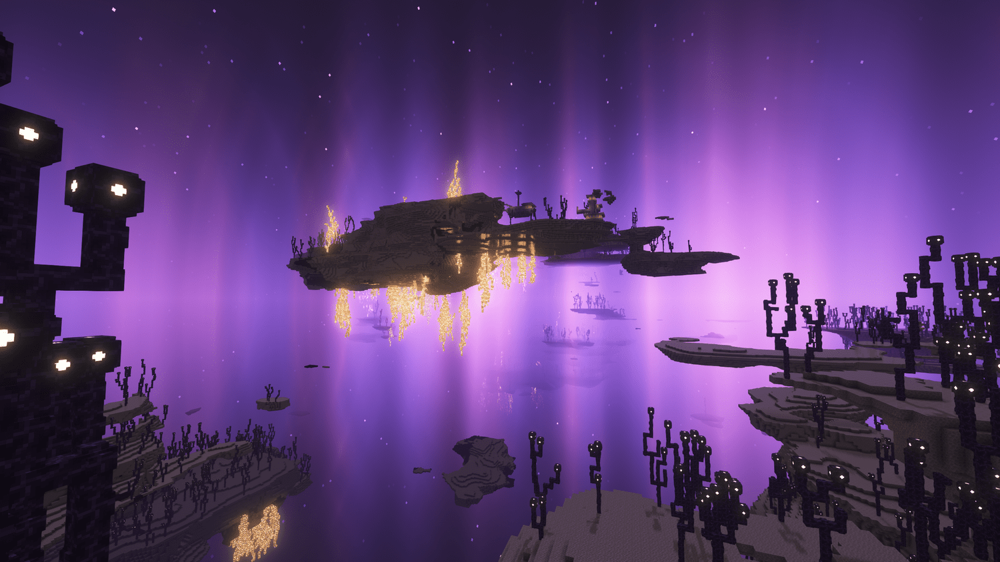
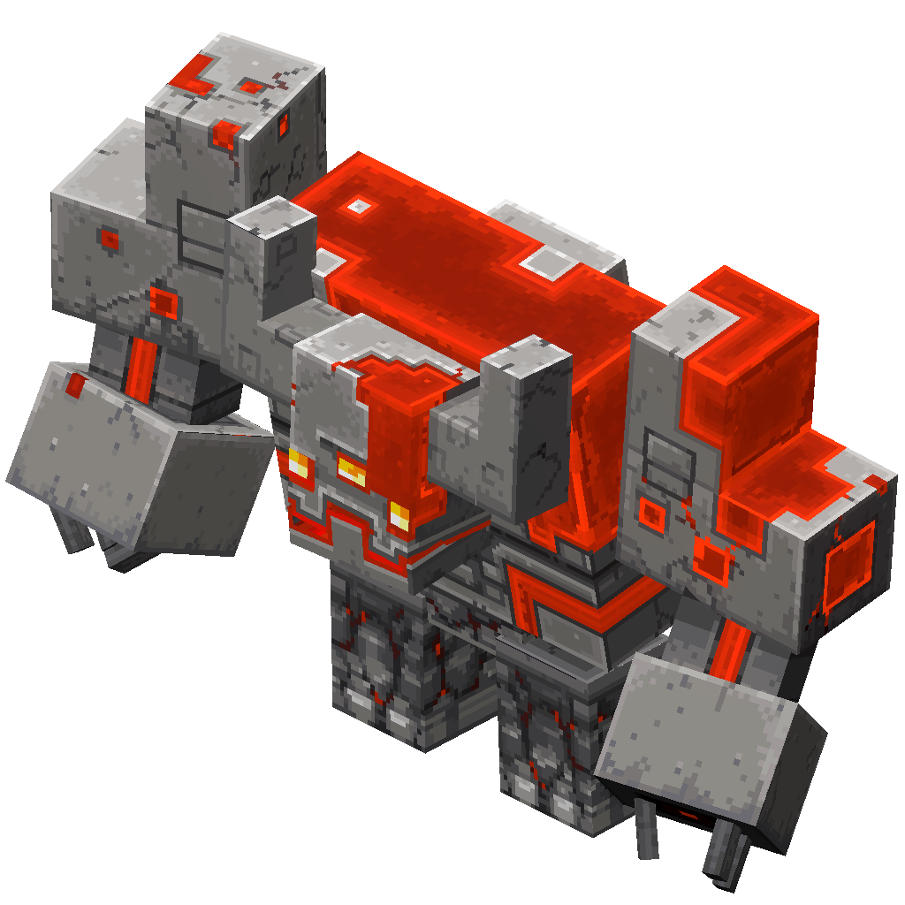
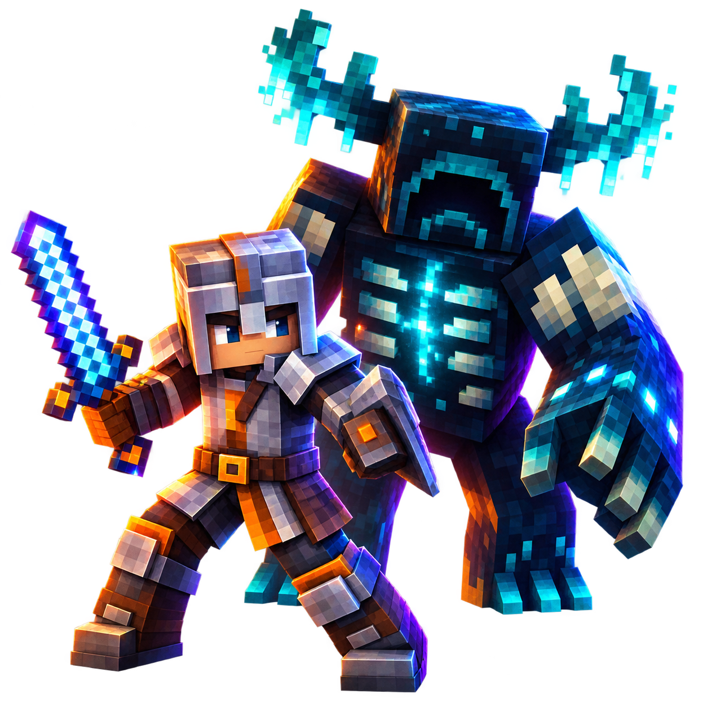

EL OVERWORLD.
El horizonte es solo el comienzo.
Descubre biomas renovados, cumbres imponentes y cuevas que invitan a seguir explorando. Entre los paisajes, nuevas estructuras esperan su primera visita.

TU HISTORIA EMPIEZA AQUÍ.
Más allá del siguiente bloque te espera lo desconocido. Adéntrate en Gluplandia Dungeons y convierte cada expedición en una nueva historia.
play.gluplandia.com Java 26.2 · Bedrock
01 / MÁS ALLÁ DEL HORIZONTE.
El camino importa tanto como el destino. Atrévete a salir de lo conocido.

Descubre biomas renovados, cumbres imponentes y cuevas que invitan a seguir explorando. Entre los paisajes, nuevas estructuras esperan su primera visita.

Explora nuevos biomas infernales y estructuras desafiantes. Prepara tu equipo antes de cruzar el portal.

Terrenos de otro mundo y nuevas rutas de exploración te esperan entre islas suspendidas sobre la oscuridad.
02 / CADA EXPEDICIÓN CUENTA.
Prepara provisiones. Enciende una antorcha. Siempre hay un camino que todavía no has recorrido.
Desciende a criptas y recorre ruinas habitadas por enemigos. Busca las salas ocultas y vuelve con el botín que logres conquistar.
EXPLORA Y SOBREVIVE.Las ciudadelas y torres convierten el paisaje en una invitación. Encuentra una entrada y descubre qué se esconde tras sus muros.
CONQUISTA NUEVOS CAMINOS.Encuentra aldeas y tabernas durante tus viajes. Algunos cartógrafos pueden ayudarte a localizar el siguiente destino.
SIGUE LAS PISTAS.Busca encantamientos especiales entre los tesoros de las estructuras. También encontrarás nuevas herramientas y opciones de armadura para preparar tu próximo combate.
ENCUENTRA TU RECOMPENSA.LA AVENTURA TAMBIÉN ESTÁ EN LOS DETALLES.
La pesca incorpora nuevas recompensas y peces especiales. Explora una progresión ligada al océano y encuentra equipo pensado para tus expediciones acuáticas.
Los conjuntos de adornos completos otorgan habilidades propias. Descubre cómo cambia tu forma de jugar al equiparlos.
Una dimensión cubierta de sculk amplía la exploración subterránea. Sus cavernas guardan nuevas estructuras y objetos por descubrir.
Los mobs incorporan comportamientos y habilidades adicionales. Una estrategia que funcionó ayer puede necesitar cambios en tu próxima expedición.


03 / NO ESTÁS SOLO AHÍ FUERA.
Un paso en falso puede despertar al Warden. Muy lejos de allí, la dragona del End sigue esperando a quien se atreva a desafiarla.
Equípate bien y elige cuándo luchar. Sobrevivir también consiste en saber cuándo regresar.
Acepta el desafío ↗04 / EL SIGUIENTE CAPÍTULO ES TUYO.
Entra desde Java o Bedrock y encuentra tu lugar en Gluplandia.
Abre Multijugador, elige Añadir servidor y pega la dirección. Guarda los cambios y entra.
Abre Jugar, entra en Servidores y elige Añadir servidor donde esté disponible. Introduce la dirección de Gluplandia.
El puerto de Bedrock está pendiente de confirmación.